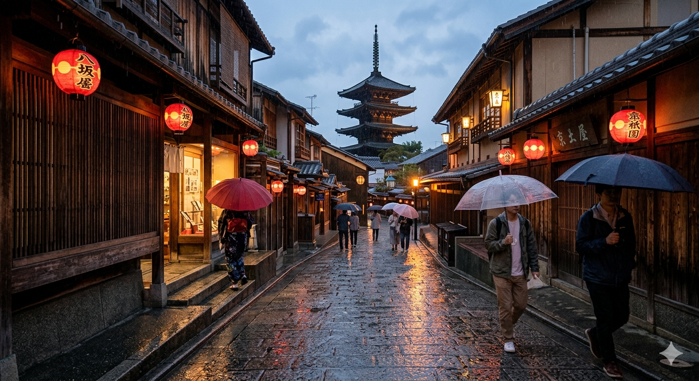
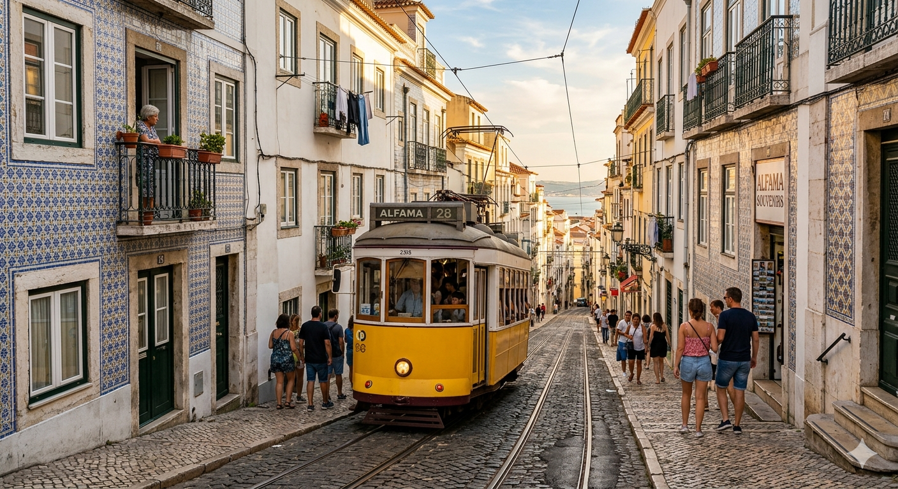
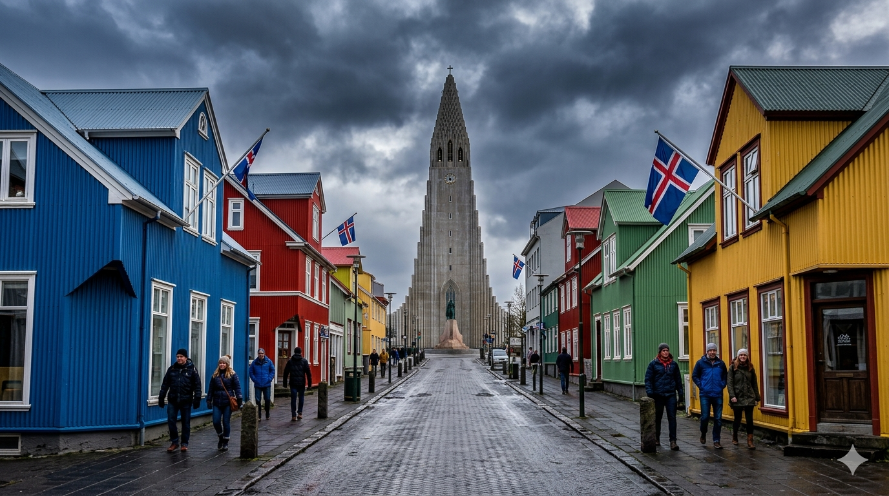
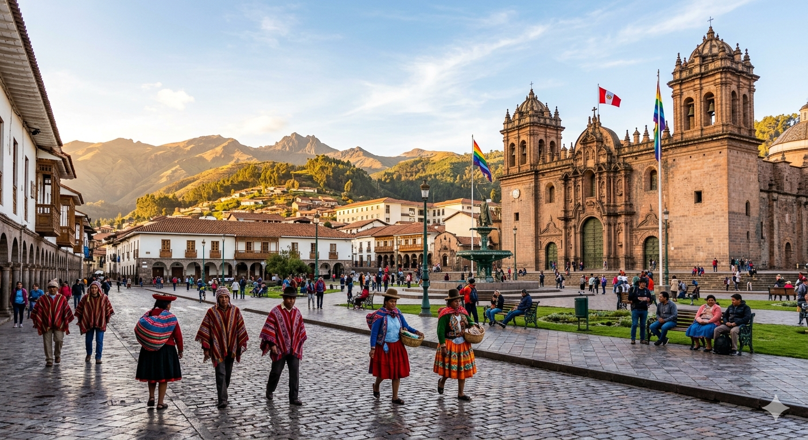

Японія: Кіото
Місто, де традиції зустрічаються з майбутнім. Бамбукові гаї та храми, що світяться в темряві.
#АзіяКраїни та міста, де мої золоті окуляри бачили світанки.

Місто, де традиції зустрічаються з майбутнім. Бамбукові гаї та храми, що світяться в темряві.
#Азія
Місто на семи пагорбах. Смак паштел-де-ната та звуки фаду на вузьких вуличках Алфами.
#Європа
Край льодовиків та вулканів. Тут я зрозумів, що природа — найкращий художник.
#Північ
Колиска інків. Відчув висоту Анд не лише фізично, а й духовно, блукаючи вулицями з камінням, якому століття.
#Південна_Америка